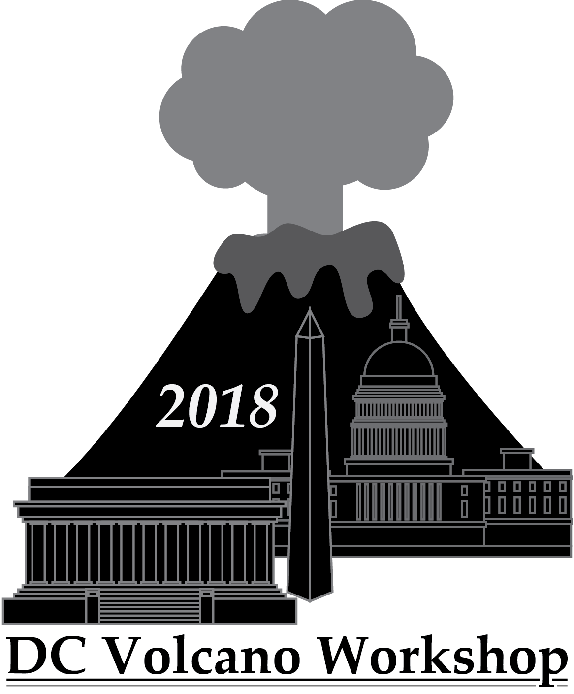

Register for the 2018 DC regional Volcano Workshop!
 Registration LinkDownload the flyer (pdf)This February, a DC regional Volcanology Workshop will be hosted at NASA Goddard Space Flight Center to reprise 2013 and last year’s successful workshops. This all-day workshop will bring together the volcanologists at our neighboring institutions for a rewarding day of presentations and discussions focused on developing new collaborations and research paths in the future.
The date of the workshop has been set as Friday, February 16th, 2018. Attendance to the workshop is absolutely free, though we plan to have lunch catered for a nominal fee of ~$10, similar to last year. To allow time for NASA GSFC to prepare visitor badges for all attendees, the Registration Deadline will be January 1, 2018.
We encourage all geoscientists interested in volcanology and related processes to register for this workshop and present your research to the community. We also encourage labs and institutions to give a talk that outlines the interesting work/personnel that their institution hosts. This workshop is intended to be highly interactive and will include science talks and periods for discussion on relevant topics.